TRIO（トリオ）/KENWOOD（ ケンウッド）
1946年に「春日無線電機商会」として設立されたオーディオブランド。 設立当初から「TRIO（トリオ）」をブランド名としており、1960年には社名も「トリオ」としている。「KENWOOD（ケンウッド）」は元もとは同社の海外向けブランドだったが、やがて国内の高級品にも使いはじめ、1980年代に同社のメインのブランドとなった。1986年に社名も「ケンウッド」へ変更。2008年、日本ビクターと経営統合し、JVC・ケンウッド・ホールディングスが設立され傘下企業となり、2011年にてJVC・ケンウッド・ホールディングスに吸収された。
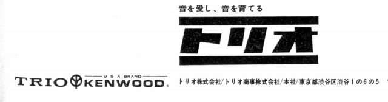
オーディオブランドとしては、往時はサンスイ、パイオニアとともに、家電系ブランドに対する専業メーカーの代表のような扱われ方をされていた。設立時の社名が示すように高周波技術を得意とし、チューナーは高く評価された。またアンプやアナログディスクプレイヤーにも定評があった。
ヘッドフォンに関しては1967年にすでにHS-1を発売していたので、老舗といってもいい存在であるが、機構的に特徴のある機種は存在しない。しかしデザインについては各価格帯のモデルに共通の要素を盛り込み、他社と明確な差別化が行われていた。また「動電全面駆動型(*)」のヘッドフォンを３世代にわたりモデルチェンジしたのは、オルソダイナミック型を有したヤマハ以外ではこのブランドぐらいしか思いつかない。
KENWOOD
（ケンウッド）の製品を以下のように分類する。（この分類は個人的な意見で、メーカーの分類ではありません）
�T.「トリオ」時代の製品（〜1985）
�@「HS」シリーズ
トリオ及びケンウッドのヘッドフォンは原則として「KH」の型番を使うが、1960〜70年代初頭の初期製品は「HS」の型番を使っていた。
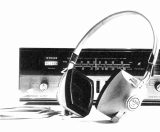
(HS-1)＊このシリーズと思われるヘッドフォンで、HS-4、5という製品が存在するが、現時点では詳細不明である。デザインはHS-1〜3と同系統でHS-4についてはステレオではなくモノラル仕様のモデルであり、1970年頃のトリオの無線機ユーザーが使用しているページがあり、無線通信用の機材の可能性が高い。また「トリオ」時代とは別に、ケンウッド時代の無線通信用のヘッドフォンにも「HS」型番の製品(HS-5、6など）が存在する。こちらは現在も流通している。
�A「KH-*1」シリーズ
背面開放によるオープンエア型。
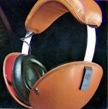
(KH-71)＊KH-11、KH-21という製品が存在するが、現時点では詳細不明である。KH-11のデザインはKH-31〜71とは別系統。KH-21はKH-31〜71と同系統のデザイン。
�B「KH-*2」シリーズ
動電全面駆動型をトップモデルとするシリーズ。同系列デザインのコンデンサー型もここに含める。
KH-32 KH-52
（動電全面駆動型） KH-72 KH-92
（コンデンサー型） KH-800
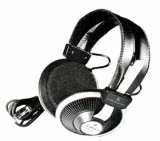
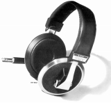
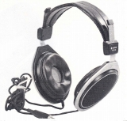
(左 KH-32 中央 KH-800 右 KH-92)�C「KH-*3」シリーズ
動電全面駆動型をトップモデルとするシリーズの第2段。「コンプレッション・コントロール」と呼ぶ側圧調整機能を備える。なお全面駆動型については前シリーズより小口径のものとなったためか、KH-92はこのシリーズと併売された。
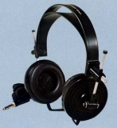 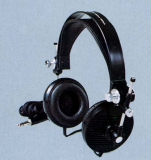
�D「KH-*5」シリーズ
動電全面駆動型をトップモデルとする最後のシリーズ。ただし上位機種(KH-45以上）と下位機種ではデザインが異なる。下位機種は他社にも似た機種を見いだせるような、いかにもOEM調達したようなデザイン。上位機種はこの時代では珍しいアイボリー・カラーを採用。
KH-25 KH-35 KH-45 KH-65
（動電全面駆動型） KH-85
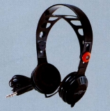
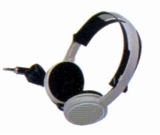
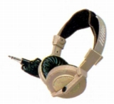
(左 KH-25 中央 KH-45 右 KH-85)＊このシリーズに属すると思われるKH-55というモデルが存在する。「ケンウッド」名義での個体であり、輸出モデルと思われる。外観はテクニカのATH一桁シリーズのATH-3〜6D風。
�E小型・軽量機
1980年代に入り、「トリオ」時代末期は小型・軽量機の流行期にあたり、すべて小型・軽量機のみとなった。
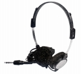 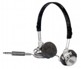
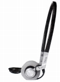
(KH-5L)(インナーイヤー型）
KH-0.3 KH-0.5 KH-0.7 KH-D5
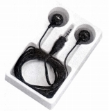
(KH-0.3)＊KH-32、KH-33、KH-51について豊永尚輝 氏所有機の画像を使用しました。ありがとうございます。
�U.「ケンウッド」時代の製品（1985〜）
�@小型・軽量機
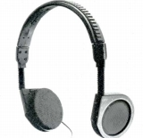
�Aインナーイヤー型
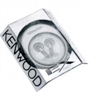
(KH-727)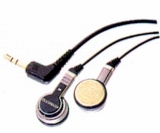
(KH-939)
�B密閉型
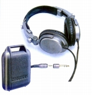
(KH-7000)�C1999年の製品